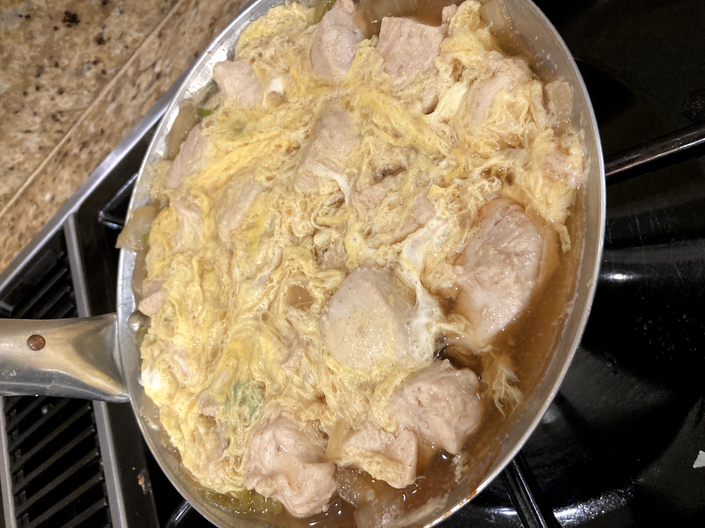
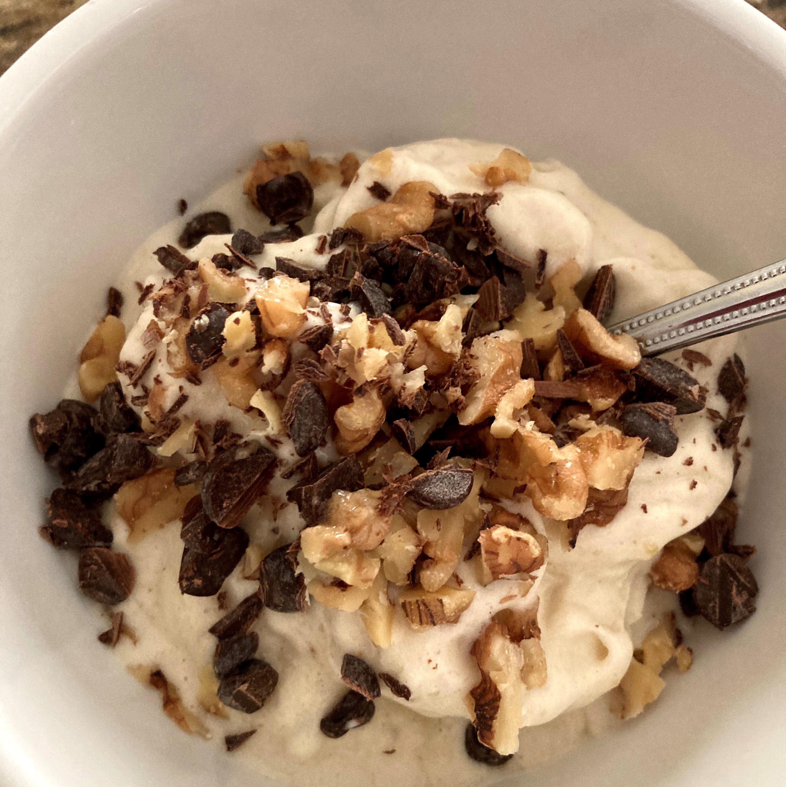

Food!!
Salut! Today I'm going to post some of the things I've been making recently! I really like to cook, though I perfer making sweets the most! They taste soo good 🤤 but I do make other things. Earlier this week I followed this recipe on how to make mabo tofu and it turned out really, really good!! I didn't have all ingredients, but since I had the majority of them I could improvise a little bit XD Althought sometimes when I do that, I mess things up a bit too much and then no one is happy... but! this time it turned out really, really good! Emphasis on the good! XD Although, hopefully I wasn't the only one who thought that...
Similar to the Mabo tofu, a few days ago I made Oyakodon for dinner. While the sauce for it was really good (I followed the recipe from Just One Cookbook), but it didn't turn out how I wanted it to 😢. It still tasted alright, and some of them turned out decent looking (I made multiple portions), however it just didn't look as pretty as the last time I made them... although that's probably because I had help that time XD Next time I'll do better!!
Moving away from the topic of dinner... I'm always craving ice cream... but we never seem to have it 😱 As such, a couple months ago I was really craving ice cream but lo and behold, we didn't have any 😔. As such I decided to improvise! And I made banana ice cream! Which isn't exactly ice cream, but it's good enough for me 🤤.
I think it's really, really tasty. Since then I've been freezing bananas every so often so I can eat this whenever I'm craving ice cream! Of course we don't always have walnuts or the chocolate chips... (some times we don't even have bananas 😱) but it's still really good!! If you're wondering how I made it, it's extremely simple! Like really simple. You just put a banana in the freezer for a couple of hours, take it out and put it in the food processor. If you're too lazy to get out the food processor like me, or you just don't have one, don't worry! When there's a will, there's always a way! You can just chop up the banana into managable pieces for your regular ol' blender to blend (you can do this before or after you freeze the banana, but obviously it's easier to do so before hand... bananas do be mushy). Then you just put it in the blender, vrrrrrrr, and it's done! Simple as that. You can also add in a bit of milk depending on preference, but it should work without any 😃. The toppings are technically optional... but it tastes really good with walnuts! Or maybe that's just me... 🙃
Well... I talked about food for too long that now I'm hungry... but that's okay because I just recently made chocolate chip cookies!! They're really yummy 😋. I would share, but sadly I think by the time you read this I would have long since finished off the batch XD Anyways, that's it for today. I'll make another post about food soon. À plus tard!